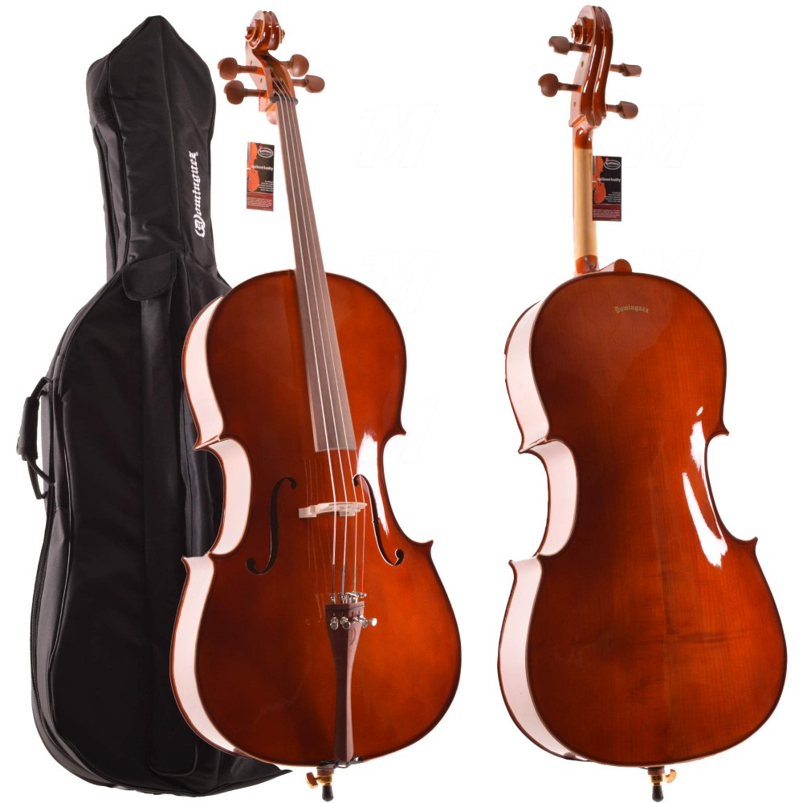
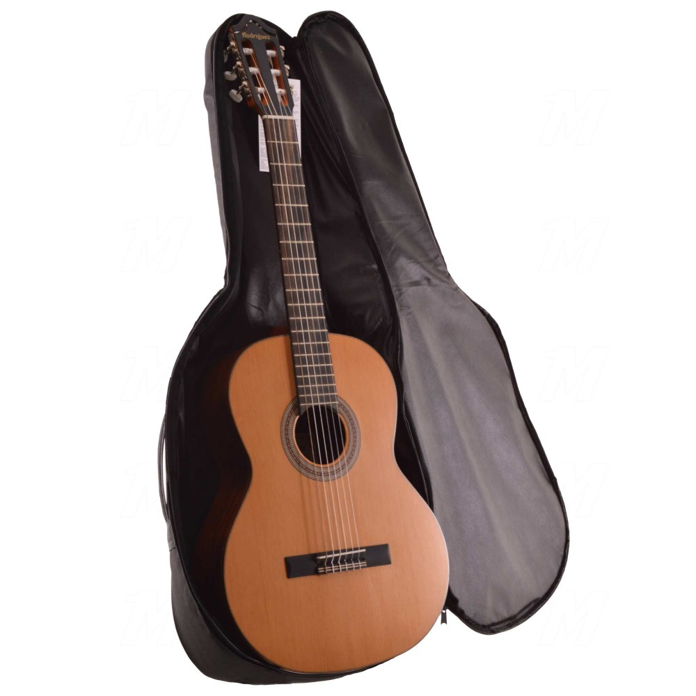

TELLİ ENSTRÜMANLAR
Özellikleri

- Önkapak: Masif Ladin
- Yanlar: Kelebek Ağacı - HARELİ
- Sap ve Eşik: Kelebek Ağacı - 1. SINIF
- Kuyruk: Thomastic Model Metal fiksli
- Yay: Moğol At Kuyruğu & Gül Ağacı
- Klavye: Gül Ağacı
- Cila: Parlak el cilası
Klasik Gitar Taşıma Kılıf Gigbag Çanta Extreme XGSC

- Yapım Malzemesi: Kaliteli, su geçirmez taffetta kumaştan (içi süngerli) imal edilmiştir.
- Taşıma için güçlendirilmiş omuz ve el askıları mevcuttur.
- Çok gözlü, fermuarlı bölmeler kullanım kolaylığı sağlamaktadır.
- Aksesuar gözleri ön kısımda bulunmaktadır.
- Maximum koruma seyahat güvenliği için özel tasarlanmış olan bu ürün tüm müzisyenlere tavsiye edilir.
DOMINGUEZ GÜL KEMAN 4/4 MAT (DVR44CRGM)

- Bu keman %100 hakiki ağaçlar kullanılarak imal edilmiştir. Tüm konservatuarlar ve müzik öğretmenleri tarafından tavsiye edilir. fabrikasyon değildir.